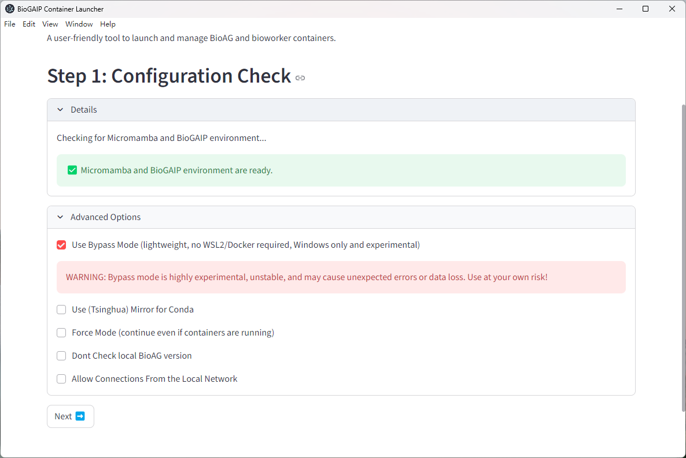
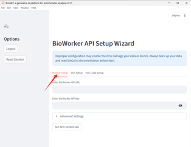

Run BioGAIP
BioGAIP offers flexible and versatile deployment options. While the Quick Start guide walks you through getting started with pre-compiled binaries for Windows, this page introduces a variety of alternative methods to help you deploy the software according to user specific needs.
Deployment via BioLauncher
BioLauncher is an all-in-one deployment assistant featuring a Graphical User Interface (GUI). It allows you to seamlessly configure and install all components of BioGAIP in a single place. Given its convenience, this is our recommended deployment method and the first one we introduce.
BioLauncher features excellent cross-platform compatibility, supporting Windows, macOS, and Linux. It has been rigorously tested on Windows and Linux, and we provide best-effort support for macOS.
Since BioGAIP is primarily developed in Python, it relies on various dependencies. To prevent frustrating dependency conflicts, BioLauncher employs two main approaches:
Easy Mode (Default): This is currently the most streamlined and fastest setup method. While it lacks certain advanced customization options, users can ideally complete the configuration in just a few minutes.
Containerized Mode: In this mode, BioGAIP components run using containerization technologies (such as Docker or experimental Singularity support). For Docker, it utilizes native Docker on Linux, and Docker Desktop or WSL2-driven Docker containers on Windows. This approach ensures an isolated, stable, and reproducible runtime environment.
Local / Bypass Mode: This is a more lightweight approach. Instead of relying on container engines, BioLauncher uses Micromamba to build an isolated local runtime environment for BioGAIP. This eliminates the need for containerization and significantly reduces local resource consumption.
Regardless of the execution mode you choose, BioLauncher independently manages its runtime environments, ensuring non interference with user existing system and local workspace.
Warning
Bypass mode requires the Microsoft Visual C++ 2015 Redistributable for Windows 10/11. While this is already installed on most Windows machines, you may need to install it if it's missing.
You can download the redistributable from https://www.microsoft.com/en-us/download/details.aspx?id=48145
Warning
Since Easy Mode provides a more streamlined installation process, lower system requirements, and numerous bug fixes, we are considering replacing Bypass Mode with it entirely.
In the future, Bypass Mode may be restricted to development purposes only.
By default, when using Easy Mode, BioLauncher relies entirely on built-in executables to run BioAG. On supported systems, no additional configuration or setup is required.
In Advanced Mode, BioLauncher automatically searches for Docker Desktop or the Docker client within WSL2 (Windows only) to serve as the backend. If you prefer not to use Docker, you can select Bypass Mode during the initial configuration check in the GUI.

BioLauncher (Windows)
The best way to run BioLauncher on Windows is by using our pre-compiled binary package. The guide for this approach can be found in the Quick Start. However, if you prefer more granular control, such as running BioLauncher from source, the following guide may be helpful.
Warning
This section is intended for advanced users. For most users on Windows, running the pre-compiled binaries is usually sufficient.
Install npm You will need to install npm on your system (if you haven't already).
Installing npm: You can download npm via the following link: https://github.com/coreybutler/nvm-windows/releases
Please select the installer named
nvm-setup.exe. We highly recommend restarting your computer after the installation is complete.Download the Source Code: You can download the source code package from our Zenodo or GitHub page. Typically, the package is named
BioGAIP-source-version.zipor something similar.Once downloaded, extract the package to a location of your choice. On modern operating systems,
.zipfiles can usually be extracted directly using the built-in file manager.After extraction, use the file manager to navigate to the
bioGen\script\windows_guidirectory, and open a Windows Terminal (PowerShell) in this directory.
Tip
On Windows 11, you can easily open a terminal by right-clicking on an empty space within the file manager and selecting Open in Terminal.
Tip
!!! Important !!!
In the following sections, unless specified otherwise, any mention of the word "terminal" refers to this specific terminal window (open in bioGen\script\windows_gui)!
Install npm and Python Dependencies You will need to install Python for your system. On the Windows platform, BioLauncher does not use the system's global Python environment. Instead, it defaults to using a standalone executable.
Installing Python:
- Download the standalone Python executable package from here.
- Open the archive using
7-Zip,WinRAR, or a similar archive manager. When you first open the archive, it may display a file namedcpython-3.12.11+20250828-x86_64-pc-windows-msvc-install_only.tar. Keep double-clicking to open it until you see a folder namedpython. - Drag and drop (or copy) this
pythonfolder into thebioGen\script\windows_guidirectory that you opened in step 2. - Execute the following commands in the terminal (indented lines below represent code execution):
python\python.exe -m pip install streamlit pyyaml psutil npm install
Start BioLauncher Continue by running the following command to start BioLauncher:
npm start
BioLauncher (macOS)
A Note Regarding macOS Pre-compiled Binaries
We have continuously strived to provide pre-compiled binaries for macOS. Unfortunately, Apple requires these binaries to be cryptographically signed (which necessitates a paid developer certificate). Without this signature, macOS will flag the application with a "file is damaged" error. During our internal testing, this led to significant user frustration and misunderstanding.
While there are workarounds available (such as modifying the binary's quarantine attributes via the terminal), BioGAIP consists of multiple independent binaries for its various components. This means users would have to repeat the workaround multiple times, resulting in a highly frustrating user experience.
As a result, we have temporarily suspended the release of pre-compiled binaries for macOS. However, you can still easily run BioLauncher from the source code by following the steps below.
Install npm
- Press
Command + Spaceto open Spotlight Search, typeTerminal, and press Enter to launch it. - If you do not have
Homebrewinstalled, please refer to this link to install it. - Once the Terminal is open, use the following commands to install npm (indented lines below represent code execution):
brew install node brew install npm - Close the terminal when finished.
- Press
Download the Source Code: You can download the source code package from our Zenodo or GitHub page. Typically, the package is named
BioGAIP-source-version.zipor something similar.Once downloaded, extract the package to a location of your choice. On modern operating systems,
.zipfiles can usually be extracted directly using the built-in file manager.After extraction, use Finder to navigate to the
bioGen/script/windows_guidirectory.Open a terminal in this specific folder by navigating to the Finder menu bar: Finder → Services → New Terminal at Folder.
Configure Python On macOS, using a standalone Python executable can cause unexpected issues, so we use a
venv(virtual environment) instead. In the terminal you just opened in Step 2, execute the following commands in sequence:``` python3 -m venv venv source venv/bin/activate python -m pip install streamlit pyyaml psutil mkdir python ln -s $(which python) python/python ```Install npm Packages Still in the same terminal, execute the following command:
npm install- Start BioLauncher
Continue by running the following command to start BioLauncher:
npm start
BioLauncher (Linux)
For Linux platforms, the startup process is almost identical to macOS. The main difference is that on most Linux distributions, Python and npm might already be installed.
If npm is not installed, it can typically be installed via nvm using the following commands (indented lines below represent code execution):
curl -o- https://raw.githubusercontent.com/nvm-sh/nvm/v0.40.1/install.sh | bash
# If you use bash:
source ~/.bashrc
# If you use zsh:
source ~/.zshrc
Download the Source Code: You can download the source code package from our Zenodo or GitHub page. Typically, the package is named
BioGAIP-source-version.zipor something similar.Once downloaded, extract the package to a location of your choice. On modern operating systems,
.zipfiles can usually be extracted directly using the built-in archive manager.After extraction, use your file manager or terminal to navigate to the
bioGen/script/windows_guidirectory.Open a terminal in this specific folder.
Configure Python On Linux, you can use a
venv(virtual environment) just like on macOS. In the terminal you just opened in Step 1, execute the following commands in sequence:python3 -m venv venv source venv/bin/activate python -m pip install streamlit pyyaml psutil mkdir python ln -s $(which python) python/pythonAlternatively, for Linux platforms, you can use a standalone Python executable, which can be downloaded from here. You will need to extract the downloaded file into the
bioGen/script/windows_guidirectory, and then execute:./python/python -m pip install streamlit pyyaml psutilInstall npm Packages Still in the same terminal, execute the following command:
npm installStart BioLauncher Continue by running the following command to start BioLauncher:
npm start
BioWorker Deployment
The core components of BioGAIP, BioAG and BioWorker, operate in a Client/Server (C/S) architecture by default (please refer to our manuscript for more details). Once BioLauncher completes the configuration and startup of BioAG, it will seamlessly guide you into the BioWorker configuration mode.

This mode offers two primary configuration options to choose from:
Manual setup: This option allows you to configure the HTTP API and API Key for an existing BioWorker. It is ideal for situations where you already have a BioWorker instance up and running.
SSH setup: This option allows you to input remote server details, such as the Username and IP address. Using these credentials,
BioAGwill automatically configure and deploy a newBioWorkerinstance on the server side via SSH.
Video Guide
Manual Deployment
Please refer to the Advanced Configuration section.